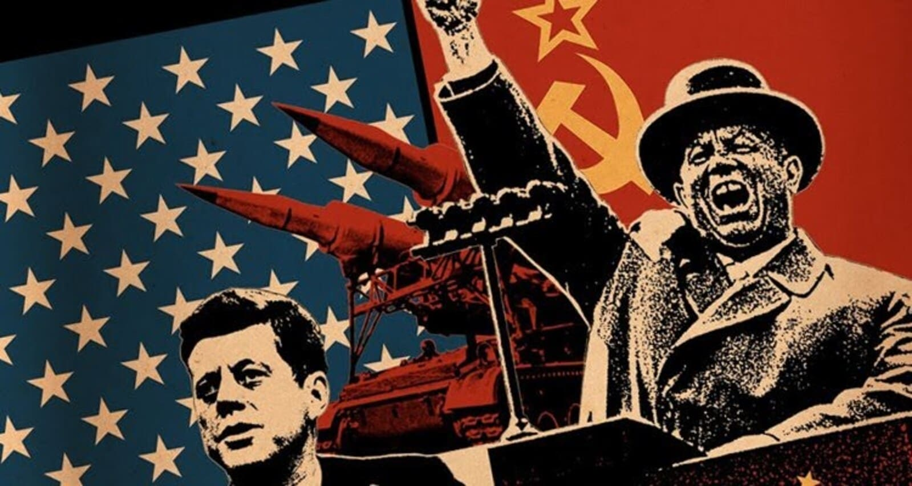
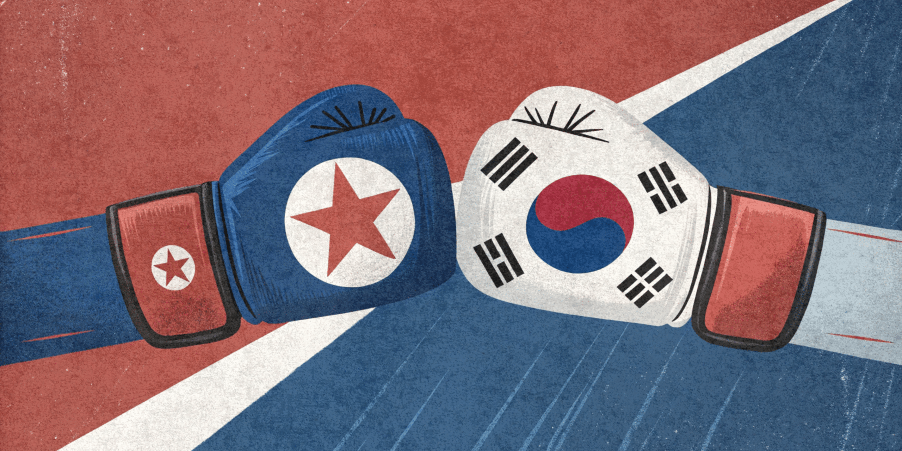
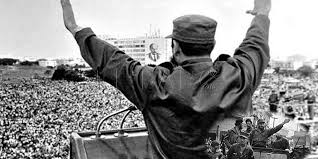
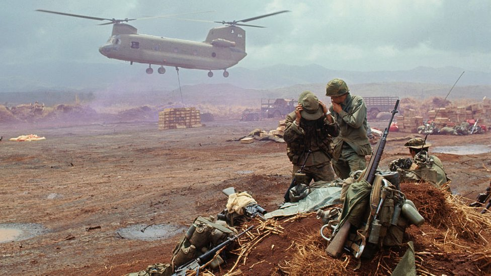

Guerra Fría.
La Guerra Fría fue un conflicto ideológico, político y económico principalmente entre Estados Unidos (EE.UU) y la Unión Soviética (URSS) tras emerger como potencias vencedoras al concluir la Segunda Guerra Mundial. Cada país representaba un bloque ideológico diferente: Estados Unidos el capitalismo y la URSS el socialismo.

Guerra Fría
La Guerra Fría fue un conflicto ideológico, político y económico principalmente entre Estados Unidos (EE.UU) y la Unión Soviética (URSS) tras emerger como potencias vencedoras al concluir la Segunda Guerra Mundial. Cada país representaba un bloque ideológico diferente: Estados Unidos el capitalismo y la URSS el socialismo.
Guerra Fría.
La Guerra Fría fue un conflicto ideológico, político y económico principalmente entre Estados Unidos (EE.UU) y la Unión Soviética (URSS) tras emerger como potencias vencedoras al concluir la Segunda Guerra Mundial. Cada país representaba un bloque ideológico diferente: Estados Unidos el capitalismo y la URSS el socialismo.

Antecedentes
En 1945, tras concluir la Segunda Guerra Mundial, Europa quedó devastada y dividida en zonas de ocupación. EE.UU., y la URSS, se consolidaron como potencias vencedoras. Sin embargo, ambas naciones representaban modelos políticos, ideológicos y económicos opuestos: el capitalismo contra el socialismo.

Principales conflictos
- Guerra de Corea (1950-1953).
- Guerra de Vietnam (1960-1970).
- Invasión Soviética de Afgnistán (1979-1989).
- Guerra de Angola (1970-1980).

Consecuencias de la Guerra Fría en América Latina
La Guerra Fría tuvo un profundo impacto en América Latina por su cercania geográfica con Estados Unidos, quien buscó impedir que el comunismo se expandiera en su "patio trasero", mientras que la Unión Soviética, y más tarde, Cuba, impulsaron movimientos revolucionarios que desafiaban las élites tradicionales y a los regímenes aliados EE.UU.
Antecedentes. Más información.
Dentro de los sucesos claves del inicio del conflicto se encuentran: la devastación de Europa que llevó a las Conferencias de Yalta y Potsdam, como resultado nos encontramos frente a una Alemania y un Berlín divididos en zonas a cargo de los Aliados, lo que sembró rivalidad, sumada a la creciente influencia sobre todo el mundo de EE.UU., y la URSS, el uso de la bomba atómica en 1945 y discursos como "Telón de Acero" en 1946, la implementación de la Doctrina Truman y el Plan Marshall en 1947 por EE.UU y la Comecón de parte de la URSS. Finalmente, el Bloqueo de Berlín entre 1948 y 1949 fue la primera gran crisis de este conflicto.
Principales conflictos. Más información.
- Guerra de Corea (1950-1953): Tras la Segunda Guerra Mundial el país queda divido, la Corea del Norte Comunista, apoyada por la URSS y China, invade a Corea del Sur, aliada de Estados Unidos y la ONU. Como consecuencia el país quedó dividido en dos estados rivales hasta a actualidad.
- Guerra de Vietnam (1960-1970): Lucha entre Vietnam del Norte (comunista) y Vietnam del Sur (proccidental). Estados Unidos interviene para frenar la expansión comunista, sin embargo, es derrotado.
- Invasión Soviética de Afgnistan (1979-1989): La URSS interviene para sostener un gobierno comunista en Kabul frente a la insurgencia muyalhidín. La URSS se debilitó militar y económica; Afganistán quedó devastado, fortaleciendose grupos religiosos.
- Guerra de Angola (1970-1980): Lucha interna tras la independencia de Portugal, que desencadenó miles de fallecidos y destrucción, convirtiéndose en símbolo de la Guerra Fría en África.

Consecuenias de la Guerra Fría en América Latina. Más información.
- Revolución Cubana (1959) encabezada por Fidel Castro, Ernesto "Che" Guevara y Camilo Cienfuegos tras derrocar a la dictadura de Fulgencio Batista. El nuevo gobierno inició profundas reformas sociales y económicas, que inspiró a sectores en toda la región.
- Revolución sandinista tras la creación del Frente Sandinista de Liberación Nacional en 1961 como respuesta a la dictadura de la familia Somoza. La Revolución instauró un gobierno revolucionario que impulsó amplias reformas sociales.
- Operación Cóndor (1975) fue una red de cooperación represiva entre las dictaduras del Cono Sur: Chile, Argentina, Uruguay, Paraguay, Bolivia y Brasil. Su propósito era perseguir y eliminar a opositores políticos. La CIA fue pieza clave durante este plan de represión.